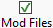
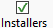
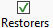

Use attribute filters to include or exclude Mods based on these characteristics.
|
 |
Specifies whether the Mod list is restricted to Mods that can be played (ie .mod or .nwm files). |
|
 |
Specifies whether the Mod list is restricted to Mods that have an Installer defined. |
|
 |
Specifies whether Restorer Mods are included in the Mod list. |
The Installer Tool enables all attribute filters by default so that the Mod list is restricted to Mods that have an Installer, can be played and includes Restorers.
Use Filter Boxes to specify filtering criteria
Use Attribute Filters